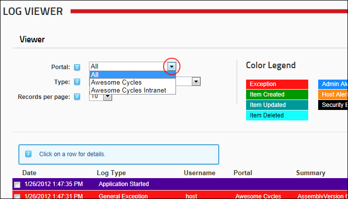

Viewing Logged Events for any Site
How to view the event logs for a single site or for all the sites within this DNN installation using the Log Viewer module.
- Navigate to Admin >
 Event Viewer - OR - Navigate to a Log Viewer module.
Event Viewer - OR - Navigate to a Log Viewer module.
- Expand the Viewer section.
- At Website, select one of the following options:
- Select All to view events from all sites. This is the default option.
- Select the required site name
- Optional. At Type, select an event type to filter events by that event type.
- Optional. Click on an event record to view full details of that event. Re-click the event record to close it.

Viewing Logged Events for one or all Sites